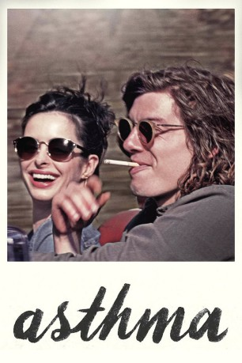
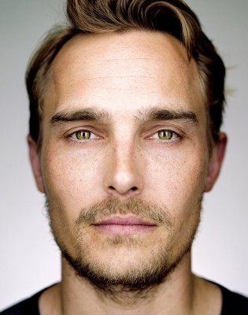

#10100 Asthma
 
 IMDB-Wertung: 5.6 / 10
IMDB-Wertung: 5.6 / 10  Metascore: 41
Metascore: 41 
Mittzwanziger Gus (Benedict Samuel) hat ein handfestes Drogenproblem und eigentlich nichts mehr zu verlieren. Nachdem der Rock ‚n‘ Roller einen weißen Rolls Royce geklaut hat, liest er auf der Straße die junge Tattoo-Künstlerin Ruby (Krysten Ritter) auf. Zusammen lassen die beiden den verhassten Großstadtdschungel New Yorks hinter sich. Ihr gemeinsamer Road Trip führt sie u.a. durch die Wildnis, zu einer Hippie-Kommune und ans Bett von Gus schwerkranker Mutter. Obwohl Ruby Gus davor warnt, sich in sie zu verlieben, müssen die beiden schon bald ihre Gefühle füreinander einordnen.
Jahr: 2014
Dauer: 90 Minuten
FSK: 16
Land: USA Studio: IFC FilmsTonspuren: DTS - ,
Untertitel:
Auflösung: 1080p (1920x800) Größe: 5744 MB
Genre: Drama, Liebe
Regisseur: Jake Hoffman
Drehbuch: Jake Hoffman
Soundtrack: Mark Noseworthy
Darsteller:
- Benedict Samuel als Gus
 Krysten Ritter als Ruby
Krysten Ritter als Ruby Nick Nolte als Werewolf
Nick Nolte als Werewolf Rosanna Arquette als Gus's Mother
Rosanna Arquette als Gus's Mother Goran Visnjic als Ragen
Goran Visnjic als Ragen Dov Tiefenbach als Logan Backer
Dov Tiefenbach als Logan Backer Iggy Pop als Local Drunk
Iggy Pop als Local Drunk-  Joey Kern als Bottle Cap
- Gillian Zinser als Kara
- Carlen Altman als Bree
- Annabelle Dexter-Jones als Lilly
- Jerry Zucker als Gus' Father
- John Lee Ames als The Kid
- Bonnie Hellman als Dana
- Massiel Hernandez als Heavy-set Woman
- Max Hoffman als Max
- Peter Jae als Cop
- Allen Landver als Party Guy
 Vincent Laresca als Painter
Vincent Laresca als Painter- Rebecca Metz als Pawn Shop Clerk
- Odessa Rae als Bathing Wings
- Mickey Schiff als The Singer
- Ashley Smith als Prancy
- Rene Ricard als Juan
- Chelsea Schuchman als Nicole
- William Appiah als Kid on Steps
- Carlise Burke als Mother's Nurse
- John Paul Caballero als Band Member
- Benny Flores IV als Werewolf Body Double
- Gregory Levine als Doorman
- Salvatore Morale als Hood Drug Dealer
- Lawrence Novak als Homeless Veteran
- Albert Rene Ricard als Juan
- Earl Thompson als Prison Guard
- Daniel Utsinger als Janitor
Datei: X:\2014(A-F)\Asthma (2014, FSK16, 1920x800).mkv seit 03.12.2018
Festplatte: HD 2013(I-Z)-2014(A-Z)
 Es gibt insgesamt 119 Filme in der Gruppe '2014(A-F)'
Es gibt insgesamt 119 Filme in der Gruppe '2014(A-F)'